COZY AI MASTERING
처음이시면 위에서부터 차례대로 따라 하시면 됩니다.
사진 속 빨간 테두리가 누를 곳이고, 빨간 숫자가 누르는 순서입니다.
내 노래 파일을 넣으면, 소리를 고르게 다듬고 알맞은 크기로 맞춰서 새 파일로 저장해 줍니다.
이렇게 다듬는 일을 「마스터링」이라고 부릅니다. 유튜브나 음원 사이트에 올리기 전에 하는 마지막 손질입니다.
원래 노래 파일은 그대로 남아 있습니다. 다듬은 것은 언제나 새 파일로 따로 저장됩니다.
준비물
윈도우 컴퓨터, 인터넷(처음 인증할 때), 메일로 받으신 라이선스 키, 그리고 다듬을 노래 파일(mp3, wav 등).
메일에 있는 설치파일 링크를 누릅니다.
아래 주소와 같은 링크입니다. 누르면 파일이 내려받아집니다.
CozyMastering_Setup_2.0.0.exe 내려받기
파일이 꽤 큽니다(약 150MB). 다 받아질 때까지 잠시 기다려 주세요.
받은 파일 CozyMastering_Setup_2.0.0.exe 를 두 번 누릅니다.
못 찾으시겠으면 「다운로드」 폴더를 열어 보세요. 인터넷 창 오른쪽 위의 내려받기 표시를 눌러도 나옵니다.
파란 창이 뜨면, 먼저 추가 정보 글씨를 누르고, 그다음 실행 을 누릅니다.
그림으로 그린 것입니다. 실제 창과 글자가 조금 다를 수 있습니다.
이 창은 바이러스가 있다는 뜻이 아닙니다. 작은 회사가 만든 프로그램이라 윈도우가 처음 보는 것이어서 한 번 물어보는 것입니다.
처음에는 실행 안 함 단추만 보입니다. 추가 정보 를 눌러야 실행 단추가 나타납니다.
「이 앱이 디바이스를 변경하도록 허용하시겠어요?」 라고 물으면 예 를 누릅니다.
설치 창이 나오면 다음 을 계속 누르고, 마지막에 설치 를 누릅니다.
중간에 「바탕화면에 아이콘 만들기」가 나오면 체크된 그대로 두세요. 바탕화면에서 프로그램을 쉽게 찾을 수 있습니다.
설치가 끝나면 마침 을 누릅니다.
「코지 마스터링 실행」에 체크가 되어 있으면 프로그램이 바로 켜집니다.
다음부터는 바탕화면의 「코지 마스터링」 아이콘을 두 번 누르면 켜집니다.
처음 켜면 아래 창이 먼저 나옵니다. 딱 한 번만 하면 됩니다.
메일로 받으신 라이선스 키를 빨간 테두리 칸에 넣습니다.
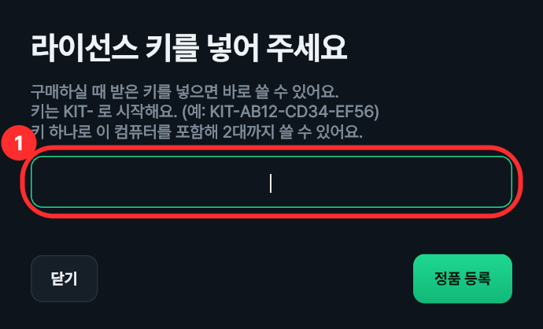
키는 KIT- 로 시작하는 글자입니다. 예) KIT-AB12-CD34-EF56
키를 손으로 치지 마시고, 복사해서 붙여 넣으세요
메일에서 키를 마우스로 끌어서 칠한 뒤 Ctrl 키를 누른 채 C(복사), 이 칸을 한 번 누르고 Ctrl 키를 누른 채 V(붙여넣기) 하시면 틀리지 않습니다.
정품 등록 을 누릅니다.
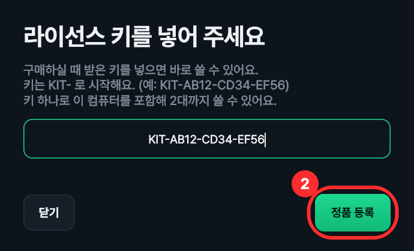
「확인하고 있어요...」가 나오고, 잠시 뒤 창이 저절로 닫히면서 프로그램이 열립니다.
여기까지 되면 성공입니다. 다음부터는 이 창 없이 바로 켜집니다.
이런 글자가 나오면
「서버에 연결할 수 없어요」 — 인터넷이 끊겨 있습니다. 인터넷을 확인하고 다시 정품 등록 을 누르세요.
그 밖의 빨간 글자 — 키가 틀렸거나, 이미 컴퓨터 2대에 쓰고 있는 키일 수 있습니다. 키를 다시 붙여 넣어 보시고, 그래도 안 되면 문의처로 연락 주세요.
처음부터 끝까지 네 가지만 하시면 됩니다. 노래 열기 → 느낌 고르기 → 들어 보기 → 저장하기.
왼쪽 위의 음원 열기 를 누릅니다.
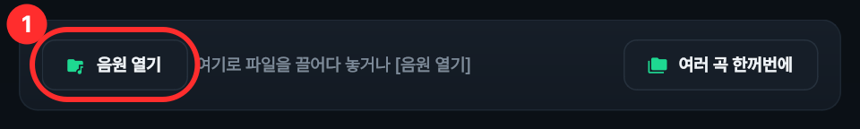
다듬을 노래 파일을 골라 열기 를 누릅니다.
또는 노래 파일을 마우스로 끌어다가 프로그램 화면 위에 놓아도 됩니다.
열리면 단추 옆에 노래 이름이 보이고, 맨 아래에 「준비됨」이 나옵니다.
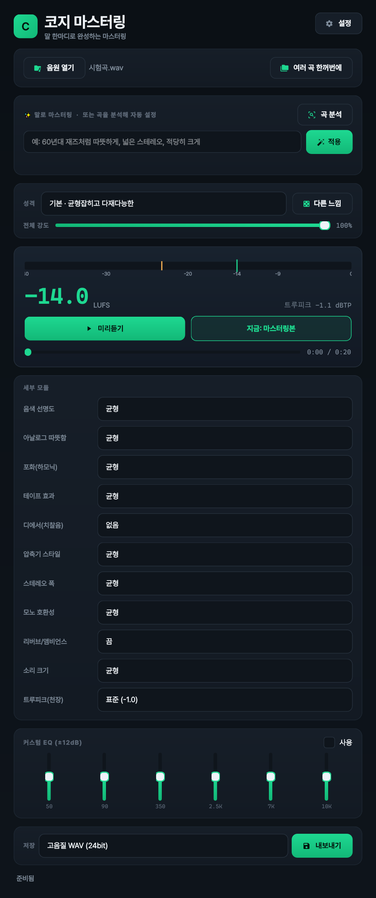
실제 창은 이 사진보다 짧아서, 아래쪽은 마우스 바퀴를 굴려 내려야 보입니다. 저장 단추도 맨 아래에 있습니다.
「성격」 옆의 긴 칸을 누릅니다.
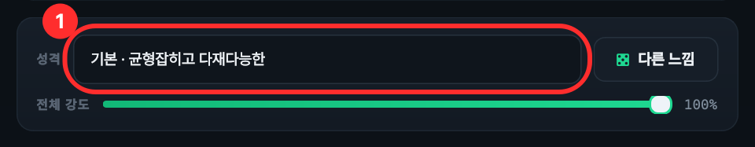
목록에서 내 노래에 어울리는 것을 하나 누릅니다.
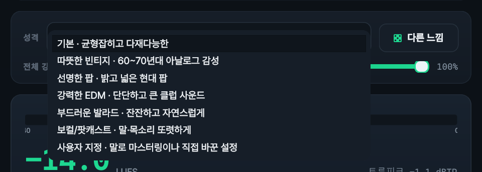
잘 모르시겠으면 「기본」 그대로 두셔도 됩니다. 처음 열면 「기본」이 골라져 있습니다.
맨 아래 「사용자 지정」은 고르는 것이 아닙니다. 설정을 직접 바꾸면 저절로 그렇게 표시됩니다.
더 손보고 싶으시면 (안 하셔도 됩니다)
전체 강도 막대 — 왼쪽으로 옮길수록 손질을 약하게, 오른쪽일수록 세게 합니다.
미리듣기 를 누르면 다듬은 소리가 나옵니다.
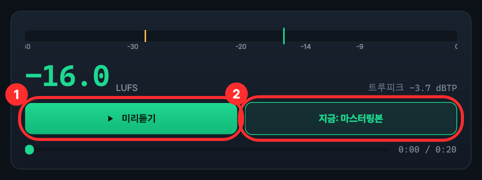
한 번 더 누르면 멈춥니다. 아래 가로 막대를 옮기면 원하는 곳부터 들을 수 있습니다.
듣는 도중에 오른쪽 단추(2번)를 누르면, 다듬기 전 원래 소리와 번갈아 들을 수 있습니다.
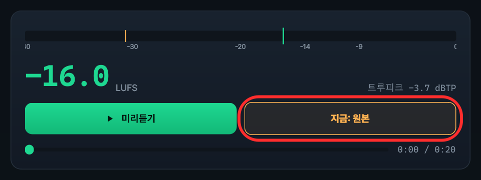
단추 글자가 「지금: 마스터링본」이면 다듬은 소리, 「지금: 원본」이면 원래 소리입니다.
화면의 큰 숫자(예: -14.0)는 소리 크기를 나타냅니다. 프로그램이 알아서 맞추므로 숫자는 몰라도 됩니다.
느낌을 바꾸면 새 소리를 만드느라 몇 초 걸립니다. 그동안 미리듣기 단추가 잠깐 흐려질 수 있습니다.
화면 맨 아래로 내려가서, 「저장」 칸에서 파일 종류를 고릅니다.
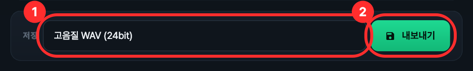
내보내기 를 누릅니다.
저장할 곳을 묻는 창이 나오면, 위치를 꼭 확인하고 저장 을 누릅니다.
파일 이름은 원래 이름 뒤에 「_마스터」가 붙어 나옵니다. 예) 내노래.wav → 내노래_마스터.wav
저장 창 왼쪽에서 「바탕 화면」이나 「음악」을 눌러 고르시면 나중에 찾기 쉽습니다. 어디에 저장했는지 모르겠으면 자주 묻는 것을 보세요.
맨 아래 작은 글씨가 「저장 완료」로 바뀌면 끝입니다.
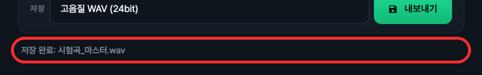
저장은 노래 길이에 따라 10초~30초쯤 걸립니다. 그동안 「고음질 렌더 중…」이 보입니다. 끝날 때까지 기다려 주세요.
다듬은 파일은 미리듣기에서 들은 소리와 똑같이 저장됩니다.
노래가 많을 때 씁니다. 한 폴더에 든 노래를 한 곡씩 차례로 전부 다듬어 줍니다.
먼저 알아 두세요
모든 노래에 지금 화면에 골라 둔 느낌이 똑같이 쓰입니다. 그러니 먼저 4장처럼 노래 하나를 열어 느낌을 골라 들어 보신 뒤 시작하시면 좋습니다.
위쪽 오른편의 여러 곡 한꺼번에 를 누릅니다.
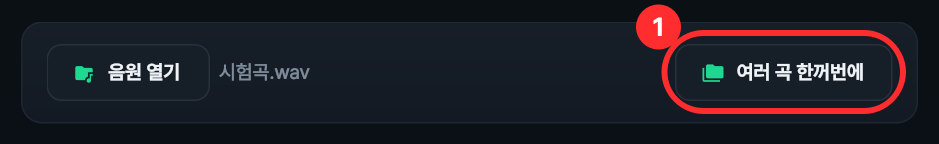
새 창이 열리면 폴더 고르기 를 누르고, 노래들이 들어 있는 폴더를 골라 폴더 선택 을 누릅니다.
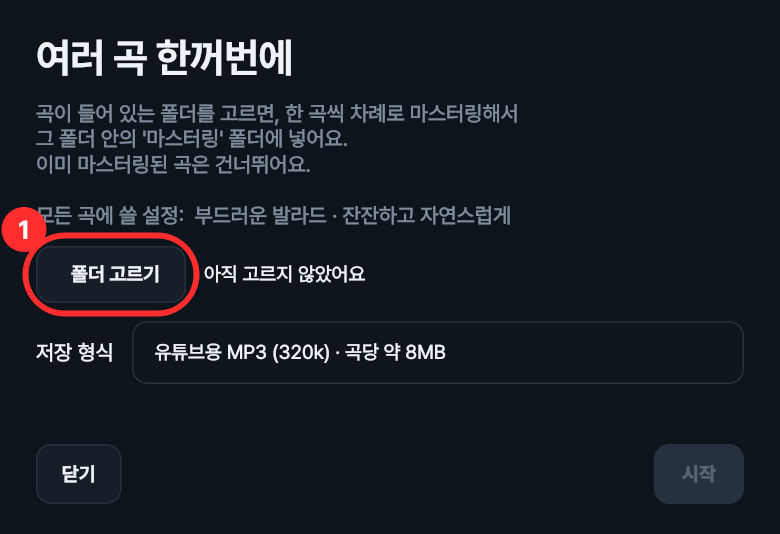
폴더 안의 노래 파일 개수가 「곡 ○개」로 나옵니다. 폴더 속의 또 다른 폴더 안에 있는 노래는 하지 않습니다.
「저장 형식」에서 파일 종류를 고릅니다.
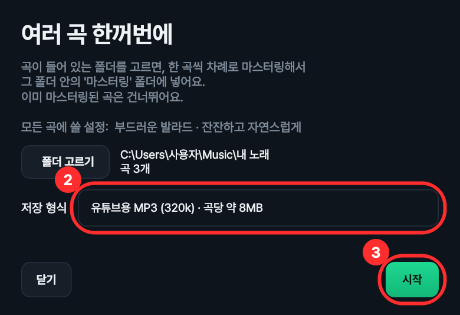
시작 을 누릅니다.
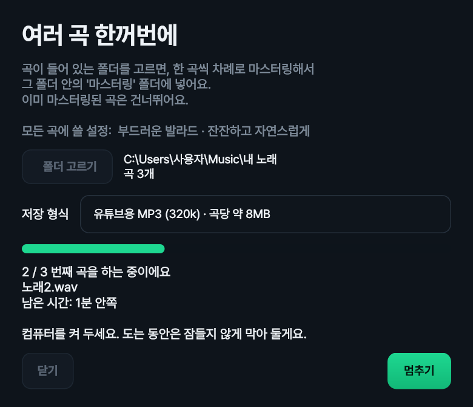
몇 번째 곡을 하는지, 남은 시간이 얼마인지 보여 줍니다. 곡이 많으면 오래 걸리니 컴퓨터를 켜 둔 채 기다려 주세요. 하는 동안에는 컴퓨터가 잠들지 않습니다.
도중에 그만두려면 멈추기 를 누르세요. 지금 하던 곡까지만 마치고 멈춥니다. 하는 동안에는 창을 닫을 수 없습니다.
「다 끝났어요!」가 나오면 결과 폴더 열기 를 눌러 다듬은 노래를 확인합니다.
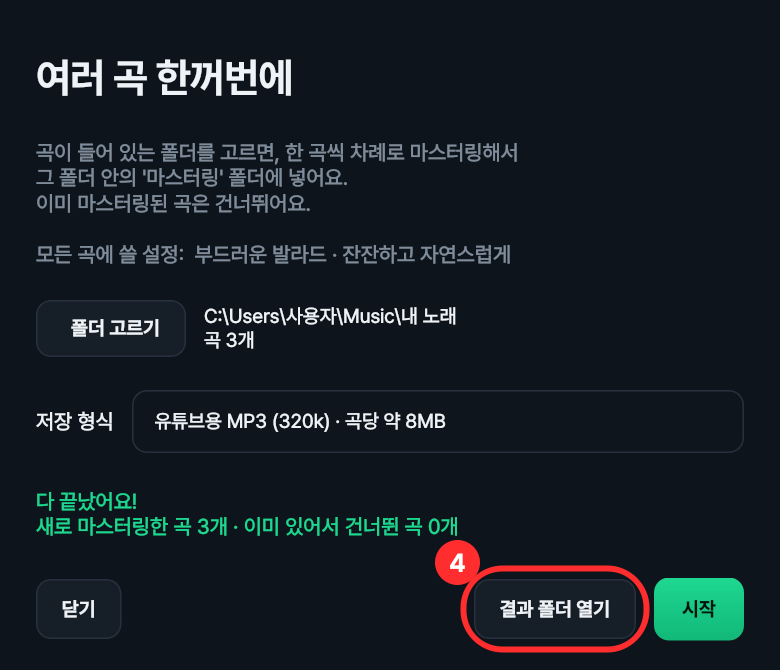
고르신 폴더 안에 「마스터링」이라는 폴더가 새로 생기고, 그 안에 들어갑니다. 파일 이름은 원래 이름 그대로입니다.
내 노래 (고르신 폴더)
├ 노래1.wav ← 원래 노래 (그대로 남음)
├ 노래2.wav
└ 마스터링 (새로 생긴 폴더)
├ 노래1.mp3 ← 다듬은 노래
└ 노래2.mp3
「마스터링」 폴더에 같은 이름의 파일이 이미 있으면 그 노래는 다시 하지 않고 건너뜁니다. 그래서 중간에 멈췄어도 다시 시작 을 누르면 남은 노래부터 이어서 합니다.
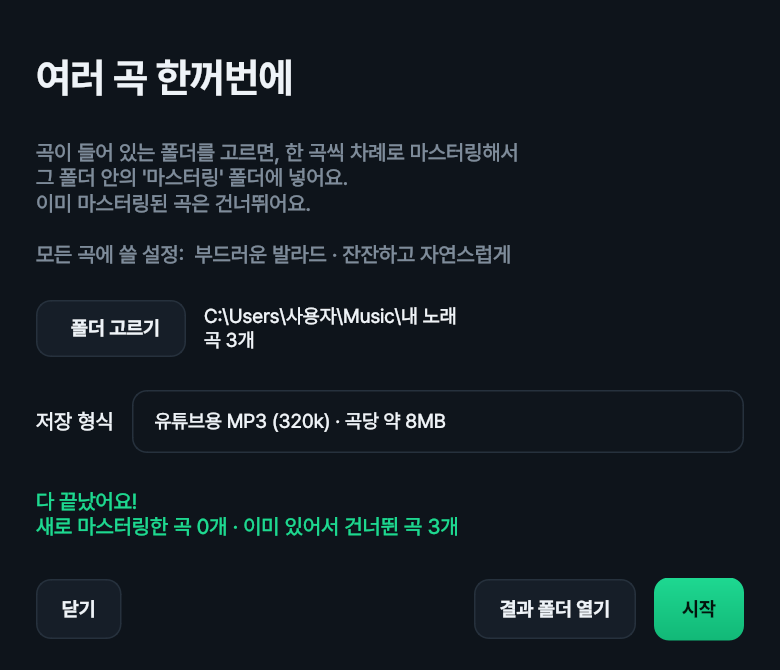
다른 느낌으로 다시 하고 싶으시면
건너뛰기 때문에, 느낌을 바꿔 다시 하려면 먼저 「마스터링」 폴더를 다른 이름으로 바꾸거나 다른 곳으로 옮긴 뒤 시작하세요.
MP3로 해 둔 것은 WAV로 다시 하면 건너뛰지 않고 새로 만듭니다(파일 이름 끝이 달라서).
「성격」을 고르는 대신, 원하는 느낌을 글로 적어서 맞출 수도 있습니다. 안 쓰셔도 됩니다.
노래를 연 다음, 위쪽 「말로 마스터링」 칸에 원하는 느낌을 적습니다.
예) 따뜻하게, 넓게, 적당히 크게 / 목소리 또렷하게 / 잔잔한 발라드처럼
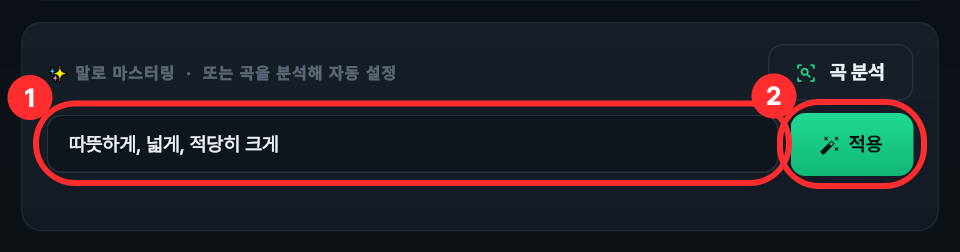
적용 을 누릅니다.
몇 초 기다리면 「적용했어요」 아래에 무엇이 바뀌었는지 초록 글씨로 알려 줍니다.
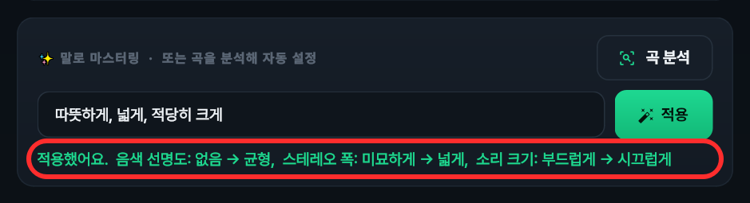
미리듣기 로 들어 보고, 마음에 들면 4장처럼 저장합니다.
AI 키가 없어도 됩니다
키가 없으면 적으신 글에서 「따뜻하게」「넓게」「크게」 같은 낱말을 찾아 맞춥니다. 프로그램이 모르는 낱말은 그냥 지나칩니다.
더 자유롭게 말로 시키고 싶으시면 오른쪽 위 설정 에서 구글(Gemini)이나 오픈AI(GPT)의 API 키를 넣을 수 있습니다. 그러면 AI가 글을 읽고 맞춰 줍니다.
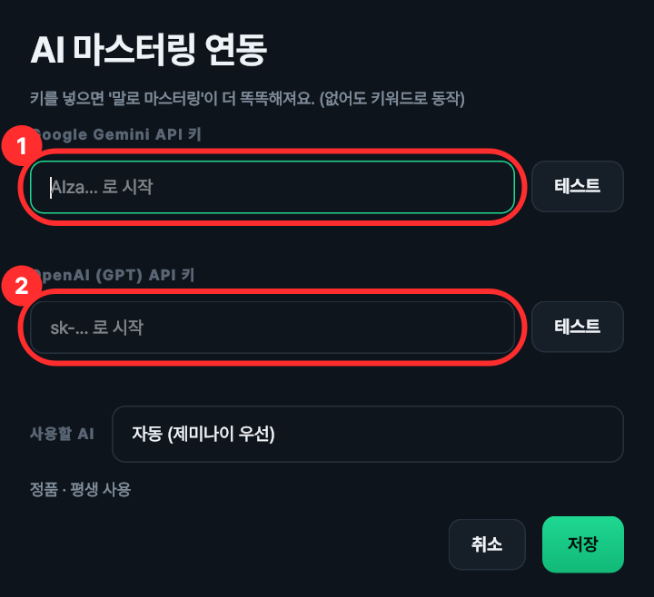
API 키는 이 프로그램을 산 것과 따로, 그 AI 회사에 가입해서 받는 것이고 그 회사에 사용료가 나갈 수 있습니다. 요금은 그 회사가 정하고 자주 바뀌니 그 회사 안내를 꼭 확인하세요.
AI 키를 넣고 쓰실 때: 같은 말이라도 결과가 조금씩 다를 수 있습니다
AI는 매번 새로 생각해서 답하기 때문에, 똑같은 글을 적어도 할 때마다 조금 다르게 맞출 수 있습니다. 고장이 아닙니다.
마음에 드는 소리가 나오면 그때 바로 저장해 두세요.
곡 분석 단추를 누르면 프로그램이 노래를 직접 듣고 알맞게 맞춰 줍니다. 이것도 써 보셔도 되고, 안 쓰셔도 됩니다.
키 하나로 컴퓨터 2대까지 쓸 수 있습니다. 다른 컴퓨터에도 똑같이 설치하고 같은 키를 넣으시면 됩니다.
이미 2대에 쓰고 계신데 컴퓨터를 바꾸셨다면, 새 컴퓨터에서는 등록이 안 됩니다. 이때는 문의처로 연락 주세요.
같은 컴퓨터에서 프로그램을 지웠다가 다시 설치하는 것은 괜찮습니다.
「이미 실행 중입니다」가 나올 때 — 이미 켜져 있습니다. 화면 아래 줄(작업 표시줄)에서 코지 마스터링을 찾아 누르세요. 안 보이면 컴퓨터를 한 번 껐다 켜 보세요.
키 넣는 창이 다시 나올 때 — 인터넷이 오래(2주 넘게) 끊겨 있었거나, 1년 사용 키의 기간이 끝났을 수 있습니다. 인터넷을 켜고 다시 켜 보세요.
「정품 확인을 위해 인터넷 연결이 필요합니다」 — 인터넷을 연결하고 다시 켜세요. 평소에는 인터넷이 없어도 2주까지는 그냥 켜집니다.
아무 반응이 없을 때 — 조금 기다려 보세요. 처음 켤 때는 몇 초 걸립니다. 그래도 안 되면 컴퓨터를 다시 켜고 해 보세요.
한 곡씩 저장하셨으면 — 저장할 때 고르신 곳에 있습니다. 파일 이름 끝에 「_마스터」가 붙어 있습니다.
못 찾으시겠으면: 윈도우 아래 검색 칸(돋보기)에 _마스터 라고 적어 보세요.
여러 곡 한꺼번에 하셨으면 — 고르신 폴더 안의 「마스터링」 폴더에 있습니다. 끝났을 때 결과 폴더 열기 를 누르면 바로 열립니다.
mp3, wav, flac, m4a, aac, ogg, aiff 파일을 넣을 수 있습니다. 대부분의 노래 파일이 됩니다.
아닙니다. 원래 노래는 그대로 있고, 다듬은 것은 항상 새 파일로 저장됩니다.
다만 한 곡 저장할 때 저장 창에서 원래 파일과 똑같은 이름으로 바꿔 저장하시면 덮어써질 수 있으니, 이름에 붙은 「_마스터」는 지우지 마세요.
그 노래 옆에 이유가 적혀 나옵니다. 대부분 파일이 망가졌거나, 노래 파일이 아니거나, 저장 공간이 모자란 경우입니다. 나머지 노래는 정상으로 계속 진행됩니다.
설명서대로 해도 안 되시면 아래로 연락 주세요. 어떤 화면에서 무슨 글자가 나왔는지 알려 주시면 빨리 도와드릴 수 있습니다. 화면을 휴대폰으로 찍어 보내 주셔도 됩니다.